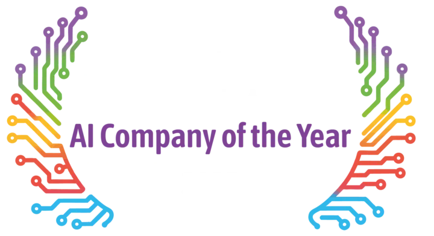
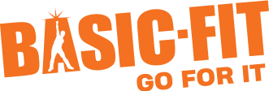
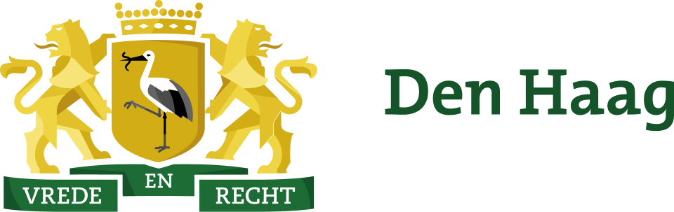
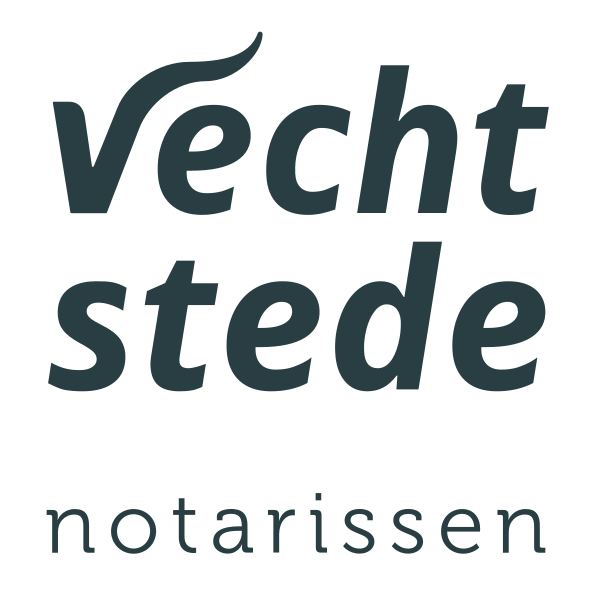

Samen met Artific zijn we bezig de AI-Notaris Assistent te ontwikkelen. De eerste resultaten zijn veelbelovend en gaan wel wat in beweging zetten in het “notaris landschap”!
Eén platform. Mens in control.
Wij maken AI die werkt en blijft werken.
Veilig en gecontroleerd agentic AI-platform: één beheersbaar fundament voor IT om generatieve AI te bouwen, uit te rollen en te beheren — één platform, geen dozijn losse tools.
Werk slimmer, sneller en efficiënter met AI. Bespaar 30% van je tijd met één AI-platform.

Samen aan het werk
Negen relaties. Eén duidelijke beweging.
-
 FC TwenteOfficiële AI-partner van de club voor drie seizoenen.
FC TwenteOfficiële AI-partner van de club voor drie seizoenen. - Basic-Fit

- Eneco
- Marktplaats
- hollandsnieuwe
- Gemeente Den Haag

- RTV Oost
- Veiligheidsregio Zuid-Limburg
- Vechtsteden Notarissen

Bewijs, vroeg in beeld
We helpen meer dan 100 klanten om AI voor hen te laten werken.
Van enterprise tot overheid, bij organisaties die security, governance en betrouwbaarheid serieus nemen.
Artific is uitgeroepen tot AI Company of the Year 2025 tijdens de Nationale AI Awards.
Bulpe Fulfilment ondersteunt zijn klantenservice met het Artific AI-platform; de resultaten zijn zo positief dat de volgende AI-processtap al in ontwikkeling is.
Uit de praktijk
Wat klanten over Artific zeggen
Artific heeft voor ons alle bestaande bedrijfsprocedures met AI uitgerust. Wat een geweldige resultaten en wat een top bedrijf om mee samen te werken!
De AI Roadmap van Artific heeft tot veel nieuwe inzichten binnen onze organisatie geleid. Binnen het hele bedrijf is gekeken naar de potentie van AI. Echt een aanrader dus.
Binnen Webton werken we sinds september 2023 met de tooling van Artific. Op het gebied van online marketing heeft Artific ons geholpen nog efficiënter en effectiever te werken.
De custom made AI-Assistent / Chatbot die voor onze klanten ontwikkeld is werkt uitstekend. Mooi om te zien hoe elke (Reseller) klant deze met open armen ontvangt.
De Artific AI-Assistent werkt als een trein. In drie weken tijd hebben we al een enorme bespaard op personele kosten en de kwaliteit van onze support is alleen maar beter geworden.
De volgende collega
Je volgende medewerker is digitaal. Veilig. Voorspelbaar. Transparant.
Elke organisatie ziet het potentieel — lagere kosten, hogere productiviteit, snellere uitvoering — maar hoe meer AI doet, hoe hoger de risico's.
Wat een medewerker effectief maakt zijn lagen: intelligentie, expertise en context. Voor AI werkt het precies zo.
Is het veilig?
AI heeft toegang tot gevoelige data — klantgegevens, financiële rapporten, interne documenten. Wie bepaalt waar het bij kan en waar die data naartoe gaat?
Is het voorspelbaar?
Zonder monitoring en audit trail weet niemand of AI-gedrag afwijkt, verandert of ontspoort.
Is het transparant?
Prompt injection, hallucinaties, ongewenste acties: kun je zien wat AI doet, waarom, en aantonen dat het klopt?
Dit zijn de vragen die elke organisatie moet beantwoorden — Artific lost ze op.
Van assistent naar autonome collega
AI begint met ondersteunen, wordt onderdeel van je processen en opereert uiteindelijk zelfstandig. Elke fase levert meer waarde — en vereist een sterker fundament.
- Fase 1 — AI als AssistentAI ondersteunt je teams. De mens beslist, AI helpt.
- Fase 2 — AI in je processenDe mens keurt goed, AI voert uit.
- Fase 3 — AI als autonome collegaAI neemt beslissingen binnen kaders: de virtuele collega in je team.
Waarde is het doel, controle is het fundament. De transitie is van gebruiker naar regisseur: niet alleen human-in-the-loop, maar human in control.
Tussen model en proces
De operationele controlelaag voor AI
OpenAI, Google en Anthropic leveren de intelligentie; Artific bouwt de motor die het productief, gecontroleerd en schaalbaar maakt binnen jouw organisatie.
Artific zit tussen de AI-modellen (GPT, Claude, Gemini) en jouw processen (CRM, e-mail, workflows) — veilig, voorspelbaar en transparant.
Jouw processen
Artific · governance · safeguards · runtime
GPT · Claude · Gemini
Wat we bouwen: de operationele laag voor AI binnen organisaties — features, interacties, integraties en governance die AI omzetten in productieve, gecontroleerde medewerkers.
Wat we niet bouwen: algemene chatbots. Artific bouwt infrastructuur voor specifieke, gecontroleerde, enterprise AI.
Het Artific Platform verbindt jouw processen via channels, agents, toolbox, data, safeguards en runtime met AI-modellen; kennisbanken, retrieval-pipelines en gestructureerde databronnen geven agents de juiste context.
Drie gereedschappen
Drie modules, één platform: gebruik er één, twee of alle drie.
Module 01
AI Assistant
Je virtuele medewerker op maat — met een rol, persoonlijkheid en toegang tot je kennisbronnen en tools; hij sluit aan bij een team en volgt je regels.
Module 02
AI ToolBox
De self-service AI-laag: IT bouwt kleine workflows één keer, elke medewerker draait ze met één klik.
Module 03
Conversation Module
Eén centrale plek voor inkomende e-mail; agents lezen en classificeren, een medewerker reviewt voordat het de deur uit gaat.
Twee manieren om te bouwen op hetzelfde platform
Artific Portal
De snelste weg naar productie: configureer agents, gebruikers en policies in een white-label web-app, zonder een regel frontend-code.
Headless
Volledige controle: roep de API aan, embed agents in je product en bouw je eigen frontend; hetzelfde security-model en dezelfde governance.
De meeste klanten starten met de portal en gaan stapsgewijs headless voor delen van hun stack.
Kaders die meegroeien
Eén plek om AI te beheren en uit te rollen
Stop de AI-wildgroei: IT definieert beleid, security en integraties; teams configureren en rollen agents uit binnen je hele organisatie.
Centrale governance
IT zet de kaders: modellen, data-toegang, regio's, retentie, toegestane tools en budgets — één keer instellen, overal geldig.
Teams bouwen agents binnen de kaders van IT: geen shadow IT, geen ongecontroleerde integraties, geen verrassingen. Verhoog adoptie met statistieken en inzichten.
Security ingebouwd, privacy zorgvuldig doordacht
Ontworpen voor organisaties die controle niet kunnen inruilen voor snelheid.
Gehost in de EU
Alle data, alle infrastructuur, alle processing binnen de EU.
ISO 27001 gecertificeerd
Onafhankelijke audit van het informatiebeveiligingssysteem, continu onderhouden.
Pseudonimisering
Persoonlijk identificeerbare informatie wordt gedetecteerd en gepseudonimiseerd voordat het ooit een model bereikt.
Audit logs
Elke prompt, elke tool-call, elke beslissing wordt vastgelegd in het systeem.
Samen bouwen
Artific + partner + klant
Wij gaan niet zelf naar de markt — partners wel. Artific is een fundament waarop partners bouwen met domeinexpertise en branchespecifieke kennis.
- ArtificFundament, interactielaag, governance en runtime.
- PartnersBranchespecifieke kennis en configuratie.
- KlantenData, processen, systemen en bedrijfscontext.
Het platform is hetzelfde; wat verschilt is hoe partners het inzetten.
Van plan naar praktijk
In vijf stappen volledig AI ontzorgd
- 01Introductie & AI-strategie
- 02Training
- 03Implementatie
- 04Aftercare
- 05Support
Na livegang blijven we betrokken: monitoring, optimalisatie en minimaal één update-sync-meeting per kwartaal.
Met 1e-, 2e- en 3e-lijns support ben je altijd verzekerd van de juiste ondersteuning.
Klaar voor controle?
Klaar om AI-adoptie te versnellen? Let's talk.
Vraag een demo aan of maak een afspraak — we laten graag zien wat Artific voor jouw organisatie betekent.
Mail info@artific.nl of bel 053-203 0123.